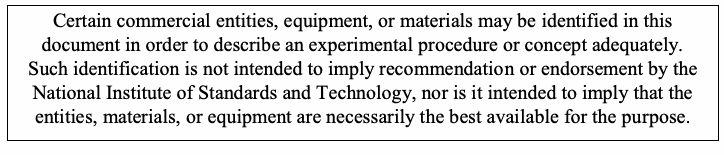
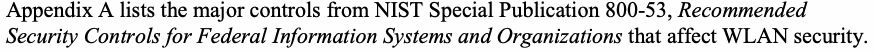
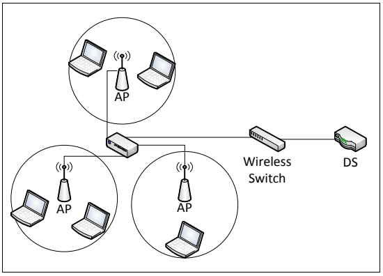
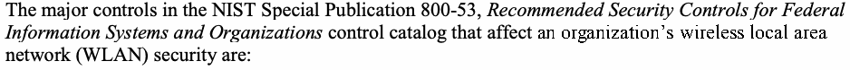
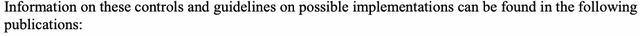

NIST Special Publication · PDF 原文抽出
Guidelines for Securing Wireless Local Area Networks (WLANs)
無線LAN（WLAN）セキュリティガイドライン
NIST SP 800-153（Guidelines for Securing Wireless Local Area Networks (WLANs)）の英文と日本語訳を段落ごとに並べた閲覧用ページです。無線LANの設計・導入から保守・監視まで、クライアント、アクセスポイント、無線スイッチなどの構成要素を保護するための推奨事項を示します。 翻訳は非公式です。要件の確認にはNIST の正式版 PDFを参照してください。
PDF から抽出した原文は原本との照合待ちです。

Special Publication 800-153
特別刊行物800-153
未レビュー訳Guidelines for Securing Wireless Local Area Networks (WLANs)
無線LANのセキュリティ保護ガイドライン（WLAN）
未レビュー訳Recommendations of the National Institute of Standards and Technology
米国国立標準技術研究所の推奨事項
未レビュー訳Murugiah Souppaya Karen Scarfone
Murugiah Souppaya Karen Scarfone
未レビュー訳Guidelines for Securing Wireless Local Area Networks (WLANs)
無線ローカルエリアネットワーク（WLAN）のセキュリティ保護ガイドライン
未レビュー訳原本PDFの抜粋画像
Recommendations of the National Institute of Standards and Technology
米国国立標準技術研究所の推奨事項
未レビュー訳Murugiah Souppaya Karen Scarfone
Murugiah Souppaya Karen Scarfone
未レビュー訳C O M P U T E R S E C U R I T Y
コンピューターセキュリティ
未レビュー訳Computer Security Division Information Technology Laboratory National Institute of Standards and Technology Gaithersburg, MD 20899-8930
コンピューターセキュリティ部門 情報技術研究所 米国国立標準技術研究所 メリーランド州ゲイザースバーグ 20899-8930
未レビュー訳February 2012
2012年2月
未レビュー訳U.S. Department of Commerce
米国商務省
未レビュー訳John Bryson, Secretary
長官：John Bryson
未レビュー訳National Institute of Standards and Technology
米国国立標準技術研究所
未レビュー訳Patrick D. Gallagher, Under Secretary for Standards and Technology and Director
標準技術担当次官兼所長：Patrick D. Gallagher
未レビュー訳Reports on Computer Systems Technology
コンピューターシステム技術報告書
未レビュー訳The Information Technology Laboratory (ITL) at the National Institute of Standards and Technology (NIST) promotes the U.S. economy and public welfare by providing technical leadership for the nation’s measurement and standards infrastructure. ITL develops tests, test methods, reference data, proof of concept implementations, and technical analysis to advance the development and productive use of information technology. ITL’s responsibilities include the development of technical, physical, administrative, and management standards and guidelines for the cost-effective security and privacy of sensitive unclassified information in Federal computer systems. This Special Publication 800-series reports on ITL’s research, guidance, and outreach efforts in computer security and its collaborative activities with industry, government, and academic organizations.
米国国立標準技術研究所（NIST）の情報技術研究所（ITL）は、測定・標準基盤に関する技術的リーダーシップを提供し、米国経済と公共の福祉を促進している。ITLは、情報技術の発展と有効活用を促すため、試験、試験方法、参照データ、概念実証の実装および技術分析を行う。ITLの責務には、連邦コンピューターシステム内の機密扱いではない情報を費用対効果の高い方法で保護し、プライバシーを確保するための技術、物理、管理および経営上の標準・ガイドラインの策定が含まれる。この特別刊行物800シリーズは、コンピューターセキュリティに関するITLの研究、指針および普及活動、ならびに産業界、政府および学術機関との協力活動を報告する。
未レビュー訳National Institute of Standards and Technology Special Publication 800-153
米国国立標準技術研究所 特別刊行物800-153
未レビュー訳24 pages (Feb. 2012)
全24ページ（2012年2月）
未レビュー訳原本PDFの抜粋画像

Acknowledgments
謝辞
未レビュー訳The authors, Murugiah Souppaya of the National Institute of Standards and Technology (NIST) and Karen Scarfone of Scarfone Cybersecurity, wish to thank their colleagues who reviewed drafts of this document and contributed to its technical content, particularly Sheila Frankel, Arnold Johnson, and Terry Hahn of NIST, and representatives from the Department of Justice and the Office of the Director of National Intelligence.
著者である米国国立標準技術研究所（NIST）のMurugiah SouppayaおよびScarfone CybersecurityのKaren Scarfoneは、本書の草稿をレビューし技術的内容に貢献した同僚、特にNISTのSheila Frankel、Arnold Johnson、Terry Hahn、ならびに司法省と国家情報長官室の関係者に感謝する。
未レビュー訳Trademark Information
商標に関する情報
未レビュー訳All trademarks and registered trademarks belong to their respective organizations.
すべての商標および登録商標は、それぞれの組織に帰属する。
未レビュー訳Table of Contents
目次
未レビュー訳Executive Summary.................................................................................................................vi
エグゼクティブサマリー……vi
未レビュー訳1. Introduction — 1
1. 序論 — 1
未レビュー訳1.1 Authority — 1
1.1 権限 — 1
未レビュー訳1.2 Purpose and Scope — 1
1.2 目的と適用範囲 — 1
未レビュー訳1.3 Audience — 1
1.3 対象読者 — 1
未レビュー訳1.4 Document Structure — 1
1.4 文書の構成 — 1
未レビュー訳2. WLAN Security Configuration — 3
2. WLANセキュリティ構成 — 3
未レビュー訳2.1 Configuration Design — 4
2.1 構成設計 — 4
未レビュー訳2.1.1 Needs Gathering — 4
2.1.1 ニーズの把握 — 4
未レビュー訳2.1.2 WLAN Architecture — 4
2.1.2 WLANアーキテクチャ — 4
未レビュー訳2.2 Configuration Implementation, Evaluation, and Maintenance — 7
2.2 構成の実装、評価および保守 — 7
未レビュー訳3. WLAN Security Monitoring — 8
3. WLANセキュリティ監視 — 8
未レビュー訳3.1 WLAN Security Monitoring Basics — 8
3.1 WLANセキュリティ監視の基礎 — 8
未レビュー訳3.1.1 Attack Monitoring — 9
3.1.1 攻撃の監視 — 9
未レビュー訳3.1.2 Vulnerability Monitoring — 10
3.1.2 脆弱性の監視 — 10
未レビュー訳3.2 Monitoring Tools — 10
3.2 監視ツール — 10
未レビュー訳3.3 Continuous Monitoring Recommendations — 11
3.3 継続的監視に関する推奨事項 — 11
未レビュー訳3.4 Periodic Assessment Recommendations — 12
3.4 定期評価に関する推奨事項 — 12
未レビュー訳List of Appendices
付録一覧
未レビュー訳Appendix A— Supporting NIST SP 800-53 Security Controls and Publications — 13
付録A — NIST SP 800-53の関連セキュリティ管理策および刊行物 — 13
未レビュー訳Appendix B— Acronyms and Abbreviations — 16
付録B — 頭字語および略語 — 16
未レビュー訳Appendix C— References — 17
付録C — 参考文献 — 17
未レビュー訳List of Figures
図一覧
未レビュー訳Figure 1: Simplified View of WLAN Architecture — 3
図1：WLANアーキテクチャの簡略図 — 3
未レビュー訳Executive Summary
エグゼクティブサマリー
未レビュー訳A wireless local area network (WLAN) is a group of wireless networking devices within a limited geographic area, such as an office building, that exchange data through radio communications. WLAN technologies are based on the IEEE 802.11 standard and its amendments.1 The fundamental components of an IEEE 802.11 WLAN (hereafter referred to as a “WLAN” in this publication) are client devices, such as laptops and smartphones, and access points (APs), which logically connect client devices with a distribution system, typically the organization’s wired network infrastructure. Some WLANs also use wireless switches, which act as intermediaries between APs and the distribution system.
無線ローカルエリアネットワーク（WLAN）は、オフィスビルなど限られた地理的範囲内にある無線ネットワーク機器の集合であり、無線通信を介してデータを交換する。WLAN技術はIEEE 802.11規格およびその改訂版に基づく。1 IEEE 802.11 WLAN（本刊行物では以後「WLAN」と呼ぶ）の基本構成要素は、ノートパソコンやスマートフォンなどのクライアントデバイスと、クライアントデバイスを通常は組織の有線ネットワークインフラストラクチャである配信システムに論理的に接続するアクセスポイント（AP）である。一部のWLANは、APと配信システムの間の仲介役となる無線スイッチも使用する。
未レビュー訳The security of each WLAN is heavily dependent on how well each WLAN component—including client devices, APs, and wireless switches—is secured throughout the WLAN lifecycle, from initial WLAN design and deployment through ongoing maintenance and monitoring. Unfortunately, WLANs are typically less secure than their wired counterparts for several reasons, including the ease of access to the WLAN and the weak security configurations often used for WLANs (to favor convenience over security). The purpose of this publication is to help organizations improve their WLAN security by providing recommendations for WLAN security configuration and monitoring. This publication supplements other NIST publications by consolidating and strengthening their key recommendations.
各WLANのセキュリティは、初期設計と展開から継続的な保守・監視に至るWLANライフサイクル全体を通じて、クライアントデバイス、AP、無線スイッチを含む各WLAN構成要素がどれだけ適切に保護されているかに大きく依存する。残念ながら、WLANは、アクセスが容易であることや、利便性をセキュリティより優先する弱いセキュリティ構成がしばしば用いられることなど、複数の理由により、一般に有線ネットワークよりセキュリティが弱い。本刊行物は、WLANセキュリティ構成および監視に関する推奨事項を示し、組織によるWLANセキュリティ改善を支援する。主要な推奨事項を統合・強化することで、他のNIST刊行物を補完する。
未レビュー訳Organizations should implement the following guidelines to improve the security of their WLANs.
組織は、WLANのセキュリティを改善するため、次の指針を実施すべきである。
未レビュー訳Have standardized security configurations for common WLAN components, such as client devices and APs.
クライアントデバイスやAPなど、一般的なWLAN構成要素に標準化されたセキュリティ構成を用意する。
未レビュー訳A standardized configuration provides a base level of security, reducing vulnerabilities and lessening the impact of successful attacks. Standardized configurations can also significantly reduce the time and effort needed to secure WLAN components and verify their security, particularly if the configuration can be deployed and verified through automated means.
標準構成は基本的なセキュリティレベルを提供し、脆弱性を減らすとともに、攻撃が成功した場合の影響を軽減する。特に構成を自動的に展開・検証できる場合、標準構成はWLAN構成要素の保護とセキュリティ検証に必要な時間と労力も大幅に削減できる。
未レビュー訳When planning WLAN security, consider the security not only of the WLAN itself, but also how it may affect the security of other networks.
WLANセキュリティを計画する際は、WLAN自体のセキュリティだけでなく、他のネットワークのセキュリティに及ぼす影響も考慮する。
未レビュー訳A WLAN is usually connected to an organization’s wired networks, and WLANs may also be connected to each other. For WLANs that need wired network access, their client devices should be allowed access only to the necessary hosts on the wired network using only the required protocols. Also, an organization should have separate WLANs if there is more than one security profile for WLAN usage; for example, an organization should have logically separated WLANs for external use (such as guests) and internal use. Devices on one WLAN should not be able to connect to devices on a logically separated WLAN.
WLANは通常、組織の有線ネットワークに接続され、WLAN同士が接続されることもある。有線ネットワークへのアクセスが必要なWLANでは、クライアントデバイスに対し、必要なプロトコルのみを用いて有線ネットワーク上の必要なホストへのアクセスだけを許可すべきである。また、WLANの利用に複数のセキュリティプロファイルがある場合、組織はWLANを分離すべきである。例えば、外部利用（来訪者など）用と内部利用用のWLANを論理的に分離すべきである。一方のWLAN上のデバイスが、論理的に分離された別のWLAN上のデバイスに接続できないようにすべきである。
未レビュー訳Have policies that clearly state which forms of dual connections are permitted or prohibited for WLAN client devices, and enforce these policies through the appropriate security controls.
WLANクライアントデバイスで許可または禁止するデュアル接続の形態を明確に定めた方針を設け、適切なセキュリティ管理策によってその方針を実施する。
未レビュー訳The term “dual connected” generally refers to a client device that is connected to both a wired network and a WLAN at the same time. If an attacker gains unauthorized wireless access to a dual-connected client device, the attacker could then use it to access or attack resources on the wired network. Organizations should consider the risks posed not only by the traditional form of dual connectness, but also by other forms involving multiple wireless networks. It is common today for client devices to be connected to multiple wireless networks simultaneously, such as cell phone, WiMAX, Bluetooth, and WLAN networks. Organizations should assess the risk of the possible combinations of network technologies for their WLAN client devices and determine how those risks should be mitigated. If one or more of the networks cannot have its risk mitigated to an acceptable level, then dual connections involving that network may pose too much risk to the organization and may need to be prohibited.
「デュアル接続」とは一般に、クライアントデバイスが有線ネットワークとWLANの両方に同時に接続している状態を指す。攻撃者がデュアル接続されたクライアントデバイスへの不正な無線アクセスを得た場合、そのデバイスを使って有線ネットワーク上のリソースにアクセスしたり、攻撃したりできる可能性がある。組織は従来型のデュアル接続だけでなく、複数の無線ネットワークを伴う他の形態のリスクも考慮すべきである。現在では、携帯電話、WiMAX、Bluetooth、WLANなど複数の無線ネットワークにクライアントデバイスを同時接続することが一般的である。組織は、WLANクライアントデバイスで可能なネットワーク技術の組合せによるリスクを評価し、その緩和方法を決定すべきである。いずれかのネットワークのリスクを許容可能な水準まで緩和できない場合、そのネットワークを伴うデュアル接続は組織にとってリスクが大きすぎる可能性があり、禁止が必要となることもある。
未レビュー訳Ensure that the organization’s WLAN client devices and APs have configurations at all times that are compliant with the organization’s WLAN policies.
組織のWLANクライアントデバイスおよびAPが、常に組織のWLAN方針に準拠する構成を備えていることを確保する。
未レビュー訳After designing WLAN security configurations for client devices and APs, an organization should determine how the configurations will be implemented, evaluate the effectiveness of the implementations, deploy the implementations to the appropriate devices, and maintain the configurations and their implementations throughout the devices’ lifecycles. Organizations should standardize, automate, and centralize as much of their WLAN security configuration implementation and maintenance as practical. This allows organizations to implement consistent WLAN security throughout the enterprise, to detect and correct unauthorized changes to configurations, and to react quickly when newly identified vulnerabilities or recent incidents indicate a need to change the WLAN’s security configuration.
クライアントデバイスおよびAPのWLANセキュリティ構成を設計した後、組織は構成の実装方法を決定し、実装の有効性を評価し、適切なデバイスに展開し、デバイスのライフサイクル全体を通して構成とその実装を維持すべきである。組織は、実用上可能な限りWLANセキュリティ構成の実装と保守を標準化、自動化、集中管理すべきである。これにより、企業全体で一貫したWLANセキュリティを実装し、構成に対する不正な変更を検知・修正し、新たに特定された脆弱性や最近のインシデントによりWLANセキュリティ構成の変更が必要と判明した際に迅速に対応できる。
未レビュー訳Perform both attack monitoring and vulnerability monitoring to support WLAN security.
WLANセキュリティを支援するため、攻撃監視と脆弱性監視の両方を実施する。
未レビュー訳Security monitoring is important for all systems and networks, but it is generally even more important for WLANs because of the increased risks that they face. Organizations should continuously monitor their WLANs for both WLAN-specific and general (wired network) attacks. Organizations should do largely the same vulnerability monitoring for WLAN components that they do for any other software: identifying patches and applying them, and verifying security configuration settings and adjusting them as needed. These actions should be performed at least as often for WLAN components as they are for the organization’s equivalent wired systems.
セキュリティ監視はすべてのシステムとネットワークにとって重要だが、WLANは直面するリスクが高いため、一般にさらに重要である。組織は、WLAN固有の攻撃と一般的な（有線ネットワークの）攻撃の両方について、WLANを継続的に監視すべきである。組織は、他のソフトウェアとほぼ同様にWLAN構成要素の脆弱性を監視すべきである。すなわち、パッチを特定・適用し、セキュリティ構成設定を検証して必要に応じて調整する。これらの措置は、少なくとも組織の同等の有線システムと同じ頻度でWLAN構成要素に対して実施すべきである。
未レビュー訳Conduct regular periodic technical security assessments for the organization’s WLANs.
組織のWLANについて、定期的な技術セキュリティ評価を実施する。
未レビュー訳These assessments should be performed at least annually to evaluate the overall security of the WLAN. In addition, organizations should perform periodic assessments at least quarterly unless continuous monitoring of WLAN security is already collecting all of the necessary information about WLAN attacks and vulnerabilities needed for assessment purposes.
WLAN全体のセキュリティを評価するため、これらの評価は少なくとも年次で実施すべきである。さらに、評価に必要なWLAN攻撃および脆弱性に関するすべての情報をWLANセキュリティの継続的監視ですでに収集していない限り、組織は少なくとも四半期ごとに定期評価を実施すべきである。
未レビュー訳1. Introduction
1. はじめに
未レビュー訳1.1 Authority
1.1 権限
未レビュー訳The National Institute of Standards and Technology (NIST) developed this document in furtherance of its statutory responsibilities under the Federal Information Security Management Act (FISMA) of 2002, Public Law 107-347.
米国国立標準技術研究所（NIST）は、2002年連邦情報セキュリティ管理法（FISMA）、Public Law 107-347に基づく法定責任を果たすため、本書を作成した。
未レビュー訳NIST is responsible for developing standards and guidelines, including minimum requirements, for providing adequate information security for all agency operations and assets; but such standards and guidelines shall not apply to national security systems. This guideline is consistent with the requirements of the Office of Management and Budget (OMB) Circular A-130, Section 8b(3), “Securing Agency Information Systems,” as analyzed in A-130, Appendix IV: Analysis of Key Sections. Supplemental information is provided in A-130, Appendix III.
NISTは、すべての機関の運用と資産に十分な情報セキュリティを提供するため、最低要件を含む標準および指針を策定する責任を負う。ただし、そのような標準および指針は国家安全保障システムには適用されない。本指針は、OMB通達A-130第8b(3)節「機関情報システムの保護」の要件と整合しており、A-130付録IV「主要節の分析」において分析されている。補足情報はA-130付録IIIに記載されている。
未レビュー訳This guideline has been prepared for use by Federal agencies. It may be used by nongovernmental organizations on a voluntary basis and is not subject to copyright, though attribution is desired.
本指針は連邦機関による利用のために作成された。非政府組織も任意に利用でき、著作権の対象ではないが、出典表示が望ましい。
未レビュー訳Nothing in this document should be taken to contradict standards and guidelines made mandatory and binding on Federal agencies by the Secretary of Commerce under statutory authority, nor should these guidelines be interpreted as altering or superseding the existing authorities of the Secretary of Commerce, Director of the OMB, or any other Federal official.
本書のいかなる記述も、法定権限に基づき商務長官が連邦機関に義務付け、拘束力を持たせた標準および指針に矛盾するものと解釈してはならない。また、本指針を、商務長官、OMB長官、その他の連邦当局者の既存の権限を変更または置き換えるものと解釈してはならない。
未レビュー訳1.2 Purpose and Scope
1.2 目的と適用範囲
未レビュー訳The purpose of this publication is to provide organizations with recommendations for improving the security configuration and monitoring of their IEEE 802.11 wireless local area networks (WLANs) and their devices connecting to those networks. The scope of this publication is limited to unclassified wireless networks and unclassified facilities within range of unclassified wireless networks.
本刊行物の目的は、組織のIEEE 802.11無線ローカルエリアネットワーク（WLAN）およびそれらのネットワークに接続するデバイスのセキュリティ構成と監視を改善するための推奨事項を提供することである。本刊行物の適用範囲は、非機密無線ネットワークおよび非機密無線ネットワークの到達範囲内にある非機密施設に限定される。
未レビュー訳This publication supplements other NIST publications by consolidating and strengthening their key recommendations, and it points readers to the appropriate NIST publications for additional information (see Appendix C for the full list of references and Appendix A for a list of major security controls relevant for WLAN security). This publication does not eliminate the need to follow recommendations in other NIST publications, such as [SP800-48] and [SP800-97]. If there is a conflict between recommendations in this publication and another NIST wireless publication, the recommendation in this publication takes precedence.
本刊行物は、主要な推奨事項を統合・強化して他のNIST刊行物を補完し、追加情報について適切なNIST刊行物を読者に案内する（参考文献の全一覧は付録C、WLANセキュリティに関連する主要セキュリティ管理策の一覧は付録Aを参照）。本刊行物は、[SP800-48]や[SP800-97]など、他のNIST刊行物の推奨事項に従う必要をなくすものではない。本刊行物の推奨事項と別のNIST無線通信刊行物の推奨事項が競合する場合、本刊行物の推奨事項が優先される。
未レビュー訳1.3 Audience
1.3 対象読者
未レビュー訳The primary audience for this publication is security professionals, network professionals, system administrators, and others who are responsible for planning, implementing, maintaining, and monitoring the security of their organization’s WLANs and the devices that connect to those WLANs.
本刊行物の主な対象読者は、組織のWLANおよびそのWLANに接続するデバイスのセキュリティの計画、実装、保守、監視を担うセキュリティ専門家、ネットワーク専門家、システム管理者、その他の関係者である。
未レビュー訳1.4 Document Structure
1.4 文書の構成
未レビュー訳The remainder of this document is composed of the following sections and appendices:
本書の残りの部分は、次の各節および付録で構成される。
未レビュー訳 Section 2 provides recommendations for WLAN security configuration, including configuration design, implementation, evaluation, and maintenance.
第2節では、構成の設計、実装、評価、保守を含むWLANセキュリティ構成の推奨事項を示す。
未レビュー訳 Section 3 presents an overview of WLAN security monitoring and gives related recommendations, including criteria for selecting monitoring tools and guidelines for determining how often to perform monitoring.
第3節では、WLANセキュリティ監視の概要と関連する推奨事項を示す。監視ツールの選定基準や監視頻度の決定指針を含む。
未レビュー訳原本PDFの抜粋画像

Appendix B provides a list of acronyms and abbreviations used in this document.
付録Bでは、本書で使用する頭字語および略語の一覧を示す。
未レビュー訳 Appendix C lists references for this document.
付録Cでは、本書の参考文献を一覧にする。
未レビュー訳2. WLAN Security Configuration
2. WLANセキュリティ構成
未レビュー訳Wireless networking enables computing devices with wireless capabilities to use computing resources without being physically connected to a network. The devices simply need to be within a certain distance (known as the range) of the wireless network infrastructure. Wireless local area networks (WLANs) are groups of wireless networking devices within a limited geographic area, such as an office building, that are capable of exchanging data through radio communications. WLANs are usually implemented as extensions to existing wired local area networks (LANs) to provide enhanced user mobility and network access. WLAN technologies are based on the IEEE 802.11 standard and its amendments. Throughout the rest of this publication, the generic term “WLAN” refers to an IEEE 802.11 WLAN.
無線ネットワークに対応したコンピューティングデバイスは、ネットワークに物理的に接続することなくコンピューティング資源を利用できる。デバイスは、無線ネットワークインフラストラクチャから一定距離（到達範囲と呼ぶ）内にあればよい。無線ローカルエリアネットワーク（WLAN）は、オフィスビルなど限られた地理的範囲内にある無線ネットワーク機器の集合であり、無線通信を介してデータを交換できる。WLANは通常、ユーザーのモビリティとネットワークアクセスを向上させるため、既存の有線ローカルエリアネットワーク（LAN）の拡張として実装される。WLAN技術はIEEE 802.11規格およびその改訂版に基づく。本刊行物の残りの部分では、総称「WLAN」はIEEE 802.11 WLANを指す。
未レビュー訳The two fundamental types of WLAN components are client devices (such as laptops and smartphones) and access points (APs), which logically connect client devices with a distribution system (DS), typically the organization’s wired network infrastructure. The DS is the means by which client devices can communicate with the organization’s wired LANs and external networks such as the Internet. Some WLANs also use wireless switches, which act as intermediaries between APs and the DS. The purpose of the switch is to assist administrators in managing the WLAN infrastructure. Figure 1 shows a simplified view of WLAN components that includes a wireless switch. WLANs without wireless switches have a similar architecture, except that the APs connect directly to the DS.
WLAN構成要素の基本的な種類は、クライアントデバイス（ノートパソコンやスマートフォンなど）とアクセスポイント（AP）であり、APはクライアントデバイスを配信システム（DS）に論理的に接続する。DSは、クライアントデバイスが組織の有線LANおよびインターネットなどの外部ネットワークと通信するための手段である。一部のWLANは、APとDSの仲介役となる無線スイッチも使用する。スイッチは管理者によるWLANインフラストラクチャ管理を支援する。図1は無線スイッチを含むWLAN構成要素の簡略図である。無線スイッチのないWLANも同様のアーキテクチャを持つが、APがDSに直接接続する。
未レビュー訳
クライアント端末が3台のアクセスポイントを介し、スイッチを通じて配信システム（DS）に接続するWLANアーキテクチャの概略図。
Figure 1: Simplified View of WLAN Architecture
図1：WLANアーキテクチャの簡略図
未レビュー訳The security of each of the WLAN components—including client devices, APs, and wireless switches—is heavily dependent on their WLAN security configuration. This section explains why having standardized security configurations is important for WLAN components and provides recommendations for designing, implementing, evaluating, and maintaining those configurations, particularly for client devices.
クライアントデバイス、AP、無線スイッチを含む各WLAN構成要素のセキュリティは、WLANセキュリティ構成に大きく依存する。本節では、標準化されたセキュリティ構成がWLAN構成要素にとって重要である理由を説明し、特にクライアントデバイスを対象として、構成の設計、実装、評価、保守に関する推奨事項を示す。
未レビュー訳As explained in Section 1.2, the recommendations presented in this section supplement those provided for specific WLAN technologies by other NIST publications [SP800-48, SP800-97].
第1.2節で説明したように、本節の推奨事項は、特定のWLAN技術に関して他のNIST刊行物が示す推奨事項を補完する[SP800-48, SP800-97]。
未レビュー訳This section does not provide an exhaustive explanation of the entire security configuration lifecycle; rather, it highlights a few topics of particular relevance to WLAN security. Section 2.1 discusses security configuration design, while Section 2.2 focuses on security configuration implementation, evaluation, and maintenance.
本節ではセキュリティ構成ライフサイクル全体を網羅的に説明するのではなく、WLANセキュリティに特に関連するいくつかの話題を取り上げる。第2.1節ではセキュリティ構成設計を論じ、第2.2節ではセキュリティ構成の実装、評価、保守に焦点を当てる。
未レビュー訳2.1 Configuration Design
2.1 構成設計
未レビュー訳Organizations should have standardized security configurations for their common WLAN components, such as client devices and APs. A standardized configuration provides a base level of security, reducing vulnerabilities and lessening the impact of successful attacks. Standardized configuration use improves the consistency and predictability of security, in conjunction with user training and awareness activities and other supporting security controls. Standardized configurations can also provide a large resource savings by reducing the time needed to secure each WLAN device and to verify its configuration for security assessments, audits, etc., particularly if the configuration can be deployed and verified through automated means.
組織は、クライアントデバイスやAPなど、一般的なWLAN構成要素向けに標準化されたセキュリティ構成を用意すべきである。標準構成は基本的なセキュリティレベルを提供し、脆弱性を減らすとともに攻撃成功時の影響を軽減する。標準構成の利用は、ユーザー訓練・意識向上活動やその他のセキュリティ管理策と相まって、セキュリティの一貫性と予測可能性を高める。また、特に構成を自動的に展開・検証できる場合、標準構成は各WLANデバイスの保護とセキュリティ評価・監査などにおける構成検証に必要な時間を削減し、大幅な資源節約にもつながる。
未レビュー訳This section focuses on two noteworthy aspects of configuration design: gathering needs and designing WLAN architectures.
本節では、構成設計における特に重要な2つの側面、すなわちニーズの収集とWLANアーキテクチャの設計に焦点を当てる。
未レビュー訳2.1.1 Needs Gathering
2.1.1 ニーズの収集
未レビュー訳Before designing a WLAN security architecture or WLAN component security configurations, an organization should gather information on needs, particularly operational and security related ones. This should include identifying relevant WLAN security requirements from applicable laws, policies, regulations, etc. For Federal agencies, this often includes requirements from OMB, the Government Accountability Office (GAO), the Department of Homeland Security (DHS), and other agencies. Another part of needs gathering is identifying and reviewing recommended WLAN security practices from Federal agencies (e.g., NIST Special Publications, DISA Security Technical Implementation Guides), WLAN vendors, and other parties [NCP]. See Section 9 of [SP800-94] for examples of possible requirements to include in needs gathering.
WLANセキュリティアーキテクチャまたはWLAN構成要素のセキュリティ構成を設計する前に、組織は特に運用面とセキュリティ面のニーズに関する情報を収集すべきである。適用される法律、方針、規制などに由来する関連WLANセキュリティ要件の特定を含めるべきである。連邦機関では、OMB、政府説明責任院（GAO）、国土安全保障省（DHS）、その他の機関の要件が含まれることが多い。ニーズ収集には、連邦機関（NIST特別刊行物、DISAセキュリティ技術実装ガイドなど）、WLANベンダー、その他の関係者が推奨するWLANセキュリティ実務の特定とレビューも含まれる[NCP]。ニーズ収集に含め得る要件の例は[SP800-94]第9節を参照。
未レビュー訳In addition to identifying these requirements and recommendations, organizations should also determine what threats their WLAN security faces. Organizations should conduct risk assessments to identify the threats against their WLANs and determine the effectiveness of existing security controls in counteracting the threats; they then should perform risk mitigation to decide what additional measures (if any) should be implemented, as discussed in [SP800-37]. Performing risk assessments and mitigation helps organizations decide how their WLANs should be secured. See Section 3.1 for an overview of common WLAN threats.
これらの要件と推奨事項を特定するだけでなく、組織はWLANセキュリティが直面する脅威も判断すべきである。組織はリスク評価を実施してWLANに対する脅威を特定し、既存のセキュリティ管理策が脅威に対抗する有効性を判断すべきである。その後、[SP800-37]で論じられているように、追加措置を実装すべきかどうかを決定するリスク緩和を行うべきである。リスク評価と緩和により、組織はWLANの保護方法を決定しやすくなる。一般的なWLAN脅威の概要は第3.1節を参照。
未レビュー訳2.1.2 WLAN Architecture
2.1.2 WLANアーキテクチャ
未レビュー訳When planning WLAN security, configuration designers should consider the security not only of the WLAN itself, but also how it may affect other networks that are accessible through it, such as internal wired networks reachable from the WLAN. An important principle of WLAN security is to separate WLANs with different security profiles. For example, there should be separate WLANs for external (guest, etc.) and internal use. Devices on an organization’s external WLAN should not be able to connect through that WLAN to devices on another of the organization’s WLANs. This helps to protect the organization’s other networks and devices from external devices and users. Organizations often set up external WLANs primarily to provide Internet access to visitors; such WLANs should be architected so that their traffic does not traverse the organization’s internal networks. For external WLANs that do need internal network access, WLAN client devices should be allowed access only to the necessary hosts or subnets using only the required protocols.
WLANセキュリティを計画する際、構成設計者はWLAN自体のセキュリティだけでなく、内部有線ネットワークなど、WLAN経由でアクセスできる他のネットワークに及ぼし得る影響も考慮すべきである。WLANセキュリティの重要な原則は、セキュリティプロファイルが異なるWLANを分離することである。例えば、外部利用（来訪者など）と内部利用には別々のWLANを設けるべきである。組織の外部WLAN上のデバイスは、そのWLANを経由して組織の別のWLAN上のデバイスに接続できないようにすべきである。これは、外部デバイスやユーザーから組織の他のネットワークおよびデバイスを保護するのに役立つ。組織は多くの場合、来訪者にインターネットアクセスを提供することを主な目的として外部WLANを設置する。そのようなWLANは、トラフィックが組織の内部ネットワークを経由しないよう設計すべきである。内部ネットワークアクセスが必要な外部WLANでは、WLANクライアントデバイスに対し、必要なプロトコルのみを用いて必要なホストまたはサブネットへのアクセスだけを許可すべきである。
未レビュー訳Another architectural issue mentioned in the WLAN reference architecture document and discussed in more detail in [GAO-11-43] is dual connected client devices. The term “dual connected” generally refers to a device that is connected to both a wired network and a WLAN at the same time. The primary concern with dual connected configurations is that an attacker may be able to gain unauthorized wireless access to the client device and then use it to attack resources on the wired network. Essentially this is allowing an attacker to exploit a lower-security network in order to gain access to a higher-security network. One possible scenario is an attacker tunneling traffic from the higher-security network to the lower-security network through the client device instead of following the intended network architecture, and thus avoiding network-based security controls intended for the higher-security network. Dual connected configurations also generally violate the principle of disabling unneeded network services to reduce attack surface; if the device is already connected to a wired network access, WLAN access is usually redundant.
WLAN参照アーキテクチャ文書で言及され、[GAO-11-43]で詳しく論じられている別のアーキテクチャ上の問題は、デュアル接続されたクライアントデバイスである。「デュアル接続」とは一般に、デバイスが有線ネットワークとWLANの両方に同時に接続されている状態を指す。デュアル接続構成の主な懸念は、攻撃者がクライアントデバイスへの不正な無線アクセスを得て、それを使って有線ネットワーク上のリソースを攻撃できる可能性があることである。これは本質的に、攻撃者が低セキュリティのネットワークを悪用して高セキュリティのネットワークへのアクセスを得ることを許す。例えば、攻撃者が意図されたネットワークアーキテクチャに従わず、クライアントデバイスを介して高セキュリティネットワークから低セキュリティネットワークへトラフィックをトンネリングし、高セキュリティネットワーク向けのネットワークベースのセキュリティ管理策を回避する場合がある。デュアル接続構成は一般に、攻撃対象領域を減らすため不要なネットワークサービスを無効化する原則にも違反する。デバイスがすでに有線ネットワークに接続されている場合、WLANアクセスは通常冗長である。
未レビュー訳Organizations should not only consider simultaneous wired network and WLAN use, but other forms of dual connectedness involving their WLAN client devices. With the increasing variety and popularity of wireless networking technologies, it is common today for devices to be connected to multiple wireless networks simultaneously. For example, most smartphones can use cell phone networks, WLANs, and Bluetooth networks simultaneously, while they are also connected to wired laptops/desktops (and possibly their wired networks) through a cabled connection (e.g., USB). It is also increasingly common for laptops to have multiple wireless interfaces, such as both WLAN and WiMAX interfaces, or to be configured to accept removable media-based WLAN interfaces. A single laptop with multiple WLAN interfaces could have simultaneous connections to multiple WLANs, such as an organization WLAN and an external WLAN.
組織は、有線ネットワークとWLANの同時利用だけでなく、WLANクライアントデバイスに関わる他のデュアル接続形態も考慮すべきである。無線ネットワーク技術の種類と人気が増すにつれ、複数の無線ネットワークに同時接続するデバイスが一般的になっている。例えば、ほとんどのスマートフォンは携帯電話ネットワーク、WLAN、Bluetoothネットワークを同時に利用でき、さらにケーブル接続（USBなど）によって有線ノートパソコン／デスクトップ（およびその有線ネットワーク）にも接続できる。ノートパソコンにWLANとWiMAXの両方など複数の無線インターフェースを備えることや、リムーバブルメディア型WLANインターフェースを受け入れるよう構成することも増えている。複数のWLANインターフェースを持つ1台のノートパソコンが、組織WLANと外部WLANなど複数のWLANに同時接続することもある。
未レビュー訳Organizations should assess the risk of the possible combinations of network technologies for their WLAN client devices and determine how those risks should be mitigated. This does not mean that all forms of dual connectedness should automatically be prohibited; examples of use cases that are often permitted include a smartphone attaching to both a WLAN and a Bluetooth-networked earbud simultaneously, and a laptop attaching to both a WLAN and a Bluetooth-networked keyboard and mouse simultaneously. However, the security of such use cases is largely dependent on the security of all of the networks. If one or more of the networks cannot have its risk mitigated to an acceptable level, then dual connections involving that network may pose too much risk to the organization and may need to be prohibited. The primary risk-related issue to be considered is the likelihood of an attacker accessing and manipulating legitimate communications and the possible and typical impact of such an attack.
組織は、WLANクライアントデバイスで可能なネットワーク技術の組合せによるリスクを評価し、その緩和方法を決定すべきである。これは、あらゆるデュアル接続形態を自動的に禁止すべきという意味ではない。一般に許可されるユースケースの例として、スマートフォンをWLANとBluetooth接続イヤホンに同時接続することや、ノートパソコンをWLANとBluetooth接続キーボード・マウスに同時接続することが挙げられる。ただし、このようなユースケースのセキュリティは、すべてのネットワークのセキュリティに大きく依存する。いずれかのネットワークのリスクを許容可能な水準まで緩和できない場合、そのネットワークを伴うデュアル接続は組織にとってリスクが大きすぎる可能性があり、禁止が必要となることもある。考慮すべき主なリスク関連事項は、攻撃者が正当な通信にアクセスして操作する可能性、およびそのような攻撃の潜在的・一般的な影響である。
未レビュー訳Organizations should have policies that clearly state which forms of dual connections are permitted or prohibited for their WLAN client devices under various circumstances. Organizations should enforce these policies through the appropriate security controls, including the actions listed below:
組織は、さまざまな状況下でWLANクライアントデバイスに許可または禁止するデュアル接続の形態を明確に定めた方針を設けるべきである。以下に示す行動を含め、適切なセキュリティ管理策でこれらの方針を実施すべきである。
未レビュー訳 For all their WLAN client devices: disable all network interfaces that are not authorized for any use (including during contingency plans for business continuity, disaster recovery, etc.), and configure the device so that the user cannot enable them or otherwise circumvent the restrictions.
すべてのWLANクライアントデバイスについて：事業継続、災害復旧などの緊急時対応計画中も含め、いかなる用途にも認可されていないすべてのネットワークインターフェースを無効化し、ユーザーが有効化したり、その他の方法で制限を回避したりできないようデバイスを構成する。
未レビュー訳 For all their WLAN client devices not authorized for dual connections:
デュアル接続を認可されていないすべてのWLANクライアントデバイスについて：
未レビュー訳o Implement the appropriate technical security controls (discussed below the bullets) so that all dual connected configurations are prohibited. o If feasible, configure the devices to disable bridging (passing traffic between the networks). This is precautionary in case an unauthorized dual connection occurs.
o すべてのデュアル接続構成を禁止するよう、適切な技術的セキュリティ管理策（以下の箇条書きの下で論じる）を実装する。o 可能であれば、ネットワーク間のトラフィック転送であるブリッジングを無効化するようデバイスを構成する。これは、認可されていないデュアル接続が発生した場合に備える予防措置である。
未レビュー訳 For all their WLAN client devices authorized for dual connections:
デュアル接続を認可されたすべてのWLANクライアントデバイスについて：
未レビュー訳o Implement the appropriate technical security controls (discussed below the bullets) so that the authorized dual connected configurations are only active when necessary and that all other dual connected configurations are prohibited.
o 認可されたデュアル接続構成のみが必要な場合に限り有効となり、それ以外のすべてのデュアル接続構成は禁止されるよう、適切な技術的セキュリティ管理策（以下の箇条書きの下で論じる）を実装する。
未レビュー訳o Configure the devices to disable bridging (passing traffic between the networks) unless absolutely necessary.
o 絶対に必要な場合を除き、ネットワーク間のトラフィック転送であるブリッジングを無効化するようデバイスを構成する。
未レビュー訳There are several options for implementing WLAN client device dual connection policies, such as prohibiting unauthorized configurations from being used and disabling authorized dual connections when not needed. To enforce such restrictions, organizations should rely on automated technical controls whenever feasible. Non-technical controls are usually not effective enough; for example, it is generally not feasible to rely on users to remember to always promptly disable WLAN interfaces every time they are no longer needed. Each organization should evaluate the possible controls for implementing dual connection policies on their WLAN client devices and then choose the combinations of controls that are most appropriate, providing sufficient security while also permitting necessary functionality.
WLANクライアントデバイスのデュアル接続方針を実装するには、認可されていない構成の使用を禁止する、必要のないときに認可済みデュアル接続を無効化するなど、複数の選択肢がある。このような制限を実施する際、組織は実用可能な場合は常に自動化された技術的管理策に依拠すべきである。非技術的管理策は通常、十分な効果がない。例えば、WLANインターフェースが不要になるたび、ユーザーが必ず速やかに無効化することを覚えていると期待するのは一般に現実的ではない。各組織は、WLANクライアントデバイス上でデュアル接続方針を実装するための管理策を評価し、必要な機能を許容しながら十分なセキュリティを提供する、最も適切な管理策の組合せを選択すべきである。
未レビュー訳Some of the possible controls are preventative (implementing and enforcing a configuration), while others are detective (monitoring a configuration, monitoring network activity, alerting when a problem is detected, etc.) Preventative controls are generally preferable to detective controls, but it is even stronger to use both preventative and detective controls together. See Section 3 for more information on monitoring (detective) controls.
考えられる管理策には、予防的なもの（構成の実装と実施）と、発見的なもの（構成やネットワーク活動の監視、問題検知時の警告など）がある。予防的管理策は一般に発見的管理策より望ましいが、予防的管理策と発見的管理策を併用する方がさらに強力である。監視（発見的）管理策の詳細は第3節を参照。
未レビュー訳Preventative controls may need to enforce granular policies. For example, an organization might permit only wired network usage while at their headquarters, but might permit wired or wireless access to external networks. Preventative controls may also need to provide flexibility; organizations often need to allow users to attach the organization’s mobile client devices to new external WLANs, and thus the users need some ability to manage their devices’ WLAN configuration.
予防的管理策では、きめ細かなポリシーの適用が必要な場合がある。たとえば、組織は本社では有線ネットワークだけを許可し、外部ネットワークへの接続では有線と無線の両方を許可することがある。予防的管理策には柔軟性も必要となる場合がある。組織は多くの場合、利用者が組織のモバイルクライアントデバイスを新しい外部WLANに接続できるようにする必要があり、そのため利用者にデバイスのWLAN構成を管理する一定の権限を与える必要がある。
未レビュー訳Examples of preventative controls include the following:
予防的管理策の例を次に示す。
未レビュー訳 Configure the device’s BIOS so that WLAN connections are automatically terminated when a wired connection is detected. The BIOS setting for this is often called LAN/WLAN switching.
有線接続が検出されたときにWLAN接続を自動的に終了するよう、デバイスのBIOSを構成する。このBIOS設定は通常「LAN/WLAN切替」と呼ばれる。
未レビュー訳 Enable specialized software-based controls that permit either WLAN or wired network access, but not both simultaneously. These controls could be built into the operating system (OS), provided as part of the WLAN driver or management software, provided by the device manufacturer (e.g., laptop vendor), or acquired from third parties. These controls typically favor wired connections over WLAN because of their relative reliability, performance, and security.
WLANまたは有線ネットワークのどちらか一方だけを利用可能にし、両方を同時に利用できないようにする専用のソフトウェア管理策を有効にする。この管理策は、OSに組み込まれている場合、WLANドライバーや管理ソフトウェアの一部として提供される場合、デバイスメーカー（例：ノートPCベンダー）が提供する場合、またはサードパーティから入手する場合がある。これらの管理策は、信頼性、性能およびセキュリティの相対的な高さを理由に、通常はWLANより有線接続を優先する。
未レビュー訳 Configure host-based network security tools (e.g., host-based firewalls, host-based intrusion detection and prevention systems) to prevent multiple network interfaces from being used at one time.
ホストベースのネットワークセキュリティツール（例：ホストベースのファイアウォール、ホストベースの侵入検知・防止システム）を構成し、複数のネットワークインターフェースを同時に使用できないようにする。
未レビュー訳 Specify and enforce authorized network profiles and/or unauthorized profiles through OS/domain controls, third party policy-based software, etc.
OSやドメインの管理機能、サードパーティのポリシーベースソフトウェアなどを通じて、許可するネットワークプロファイルおよび／または許可しないプロファイルを指定し、適用する。
未レビュー訳There are other technical WLAN security controls, such as configuring clients so that they will not automatically connect to any WLANs they detect, that are beneficial for WLAN security but not robust enough to prevent dual connections.
検出したWLANにクライアントが自動接続しないよう構成するなど、WLANセキュリティに有益な技術的管理策もある。ただし、これらだけではデュアル接続を防止するには不十分である。
未レビュー訳2.2 Configuration Implementation, Evaluation, and Maintenance
2.2 構成の実装、評価および保守
未レビュー訳After designing a WLAN security configuration, an organization should determine how the configuration will be implemented, evaluate the effectiveness of the implementation, deploy the implementation to the appropriate devices, and maintain the configuration and its implementation throughout the devices’ lifecycles. Organizations should ensure that their WLAN client devices and APs have configurations at all times that are compliant with the organization’s WLAN policies.
WLANセキュリティ構成を設計した後、組織はその実装方法を決定し、実装の有効性を評価し、適切なデバイスに展開し、各デバイスのライフサイクル全体を通じて構成とその実装を維持することが望ましい。組織は、WLANクライアントデバイスとAPの構成が常に組織のWLANポリシーに準拠するようにすることが望ましい。
未レビュー訳Organizations should standardize, automate, and centralize as much of their WLAN security configuration implementation and maintenance as practical, particularly for their WLAN client devices and access points. This allows organizations to implement consistent WLAN security throughout the enterprise, to detect and correct unauthorized changes to configurations, and to react quickly when newly identified vulnerabilities or recent incidents indicate a need to change the WLAN’s security configuration.
組織は、特にWLANクライアントデバイスとアクセスポイントについて、WLANセキュリティ構成の実装と保守を可能な限り標準化、自動化および集中管理することが望ましい。これにより、企業全体で一貫したWLANセキュリティを実装し、構成への不正な変更を検出・修正し、新たに特定された脆弱性や最近のインシデントを受けてWLANセキュリティ構成を変更する必要が生じたときに迅速に対応できる。
未レビュー訳Organizations can often leverage existing configuration management solutions for their WLAN security configuration management. Many organizations already have general configuration management solutions in place that can handle a wide variety of software; such solutions may be built into operating systems or provided through third-party software installed on their client devices and other WLAN components. Also, WLAN client management software often has configuration management capabilities; this software may already be installed on the WLAN devices. If the existing configuration management solutions cannot collectively provide the necessary WLAN configuration implementation and maintenance capabilities, then the organization should evaluate alternatives and implement a suitable configuration management solution that provides the missing capabilities.
組織は、既存の構成管理ソリューションをWLANセキュリティ構成の管理に活用できることが多い。多くの組織はすでに、多様なソフトウェアを扱える汎用構成管理ソリューションを導入している。このようなソリューションはOSに組み込まれている場合や、クライアントデバイスなどのWLAN構成要素にインストールするサードパーティ製ソフトウェアとして提供される場合がある。また、WLANクライアント管理ソフトウェアに構成管理機能が備わっていることも多く、そのソフトウェアがすでにWLANデバイスにインストールされている場合がある。既存の構成管理ソリューションを組み合わせても必要なWLAN構成の実装・保守機能を提供できない場合、組織は代替策を評価し、不足機能を補う適切な構成管理ソリューションを実装することが望ましい。
未レビュー訳Organizations should evaluate all standardized WLAN security configuration implementations carefully before deploying them throughout production environments. Even if the organization is confident that the configuration is sound, it should still be evaluated carefully to ensure that its implementation meets the organization’s particular security and operational requirements. Every operating environment has unique characteristics that should be taken into account. It is particularly important to evaluate the strength of the configuration and its potential impacts on performance and functionality (for example, a security setting that is incompatible with use of a particular application).
組織は、標準化されたWLANセキュリティ構成の実装を本番環境全体に展開する前に、慎重に評価することが望ましい。構成が適切であると確信している場合でも、その実装が組織固有のセキュリティ要件と運用要件を満たすか慎重に評価することが望ましい。運用環境ごとに固有の特性があるため、それらを考慮に入れる必要がある。構成の強度と、性能や機能への潜在的な影響（例：特定のアプリケーションと互換性のないセキュリティ設定）を評価することが特に重要である。
未レビュー訳3. WLAN Security Monitoring
3. WLANセキュリティ監視
未レビュー訳This section discusses two types of security monitoring: assessments [SP800-115, SP800-53A] and continuous monitoring. Security assessment is “the process of determining how effectively an entity being assessed meets specific security objectives.” Security assessments are typically performed periodically, such as annually or quarterly, and are often called periodic assessments. Continuous monitoring is defined in [SP800-137] as “maintaining ongoing awareness of information security, vulnerabilities, and threats to support organizational risk management decisions. The objective is to conduct ongoing monitoring of the security of an organization’s networks, information, and systems, and respond by accepting, avoiding/rejecting, transferring/sharing, or mitigating risk as situations change.” Think of continuous monitoring as doing assessments in near real-time, so that the organization can react to problems in minutes instead of months or years.
本節では、セキュリティ監視の2種類、すなわち評価[SP800-115, SP800-53A]と継続的監視について説明する。セキュリティ評価とは「評価対象の主体が特定のセキュリティ目標をどの程度有効に満たすかを判断するプロセス」である。セキュリティ評価は通常、年次や四半期ごとなど定期的に行われ、定期評価と呼ばれることも多い。[SP800-137]では、継続的監視を「組織のリスク管理上の意思決定を支援するため、情報セキュリティ、脆弱性および脅威について継続的に認識を保つこと。組織のネットワーク、情報およびシステムのセキュリティを継続的に監視し、状況の変化に応じてリスクを受容、回避／拒否、移転／共有、または軽減することで対応することを目的とする」と定義している。継続的監視とは、問題に数か月や数年後ではなく数分以内に対応できるよう、ほぼリアルタイムで評価を行うことと考えるとよい。
未レビュー訳For WLAN security, the same tools are often useful for both periodic assessments and continuous monitoring. These forms of monitoring are used to ensure that each WLAN component’s security configuration meets the organization’s requirements (and to report all deviations from these requirements), as well as to monitor WLAN activity to identify attacks, improperly secured communications, and other WLAN security issues. This section provides recommendations for WLAN security monitoring (both periodic assessments and continuous monitoring).
WLANセキュリティでは、定期評価と継続的監視の両方に同じツールが役立つことが多い。これらの監視は、各WLAN構成要素のセキュリティ構成が組織の要件を満たすこと（および要件からの逸脱をすべて報告すること）を確認するとともに、WLANの活動を監視して攻撃、不適切に保護された通信、その他のWLANセキュリティ上の問題を特定するために使用する。本節では、定期評価と継続的監視の両方を含むWLANセキュリティ監視の推奨事項を示す。
未レビュー訳As explained in Section 1.2, the recommendations presented in this section supplement those provided for specific WLAN technologies by other NIST publications [SP800-48, SP800-97], as well as NIST publications on general security assessment [SP800-115, SP800-53A] and continuous monitoring [SP800-137].
1.2節で説明したとおり、本節の推奨事項は、特定のWLAN技術に関する他のNIST刊行物[SP800-48, SP800-97]の推奨事項に加え、一般的なセキュリティ評価[SP800-115, SP800-53A]および継続的監視[SP800-137]に関するNIST刊行物の推奨事項を補足する。
未レビュー訳3.1 WLAN Security Monitoring Basics
3.1 WLANセキュリティ監視の基礎
未レビュー訳Security monitoring is important for all systems and networks, but it is generally even more important for WLANs. WLANs and wired networks have the same security objectives and face the same general types of threats, but WLAN security is typically harder to achieve for several reasons.
セキュリティ監視はすべてのシステムとネットワークで重要だが、WLANでは一般にさらに重要である。WLANと有線ネットワークは同じセキュリティ目標を持ち、一般に同種の脅威にさらされるものの、いくつかの理由からWLANのセキュリティ確保は通常より難しい。
未レビュー訳First, WLANs tend to be easier for attackers to access than wired networks. The most significant difference between protecting WLANs and wired networks is the relative ease of intercepting wireless network transmissions and inserting new or altered transmissions from what is presumed to be the authentic source. To monitor traffic on a wired network, an attacker would have to gain physical access to the network or remotely compromise systems on the network; for a WLAN, an attacker simply needs to be within range of the wireless transmissions. (Some attackers use highly sensitive directional antennas, which can greatly extend the effective range of attack beyond the standard WLAN range.)
第一に、WLANは有線ネットワークより攻撃者がアクセスしやすい傾向がある。WLANと有線ネットワークの保護における最大の違いは、無線ネットワークの送信を傍受し、正当な送信元からのものと見なされる通信に新しいデータや変更したデータを挿入しやすいことである。有線ネットワーク上のトラフィックを監視するには、攻撃者はネットワークに物理的にアクセスするか、ネットワーク上のシステムをリモートから侵害する必要がある。一方、WLANでは無線通信の到達範囲内にいるだけでよい。（高感度の指向性アンテナを使用し、攻撃可能な実効範囲を標準的なWLANの到達範囲より大幅に拡張する攻撃者もいる。）
未レビュー訳Second, WLANs are often poorly secured. For example, many WLANs are configured so that they do not require strong authentication; this makes it much easier, sometimes trivial, for attackers within range of the WLAN to successfully gain access to it. These configurations are often used because they are more convenient for users and administrators, but they often put the transmitted information and WLAN devices at serious risk of compromise.
第二に、WLANのセキュリティ設定が不十分なことが多い。たとえば、強固な認証を要求しないよう構成されたWLANが多く、その場合、到達範囲内の攻撃者がアクセスに成功することがはるかに容易になり、ときにはごく簡単になる。こうした構成は、利用者や管理者にとって便利なため用いられることが多いが、伝送情報とWLANデバイスを侵害の重大な危険にさらすことがある。
未レビュー訳Third, WLANs are usually connected to an organization’s wired networks. This means that the WLANs and WLAN devices are not only subject to WLAN-specific attacks, but also nearly all the attacks that wired networks and devices on those networks face.
第三に、WLANは通常、組織の有線ネットワークに接続される。このため、WLANとWLANデバイスはWLAN固有の攻撃だけでなく、有線ネットワークやそのネットワーク上のデバイスが受けるほぼすべての攻撃にもさらされる。
未レビュー訳To support WLAN security, organizations should perform both attack monitoring and vulnerability monitoring. Sections 3.1.1 and 3.1.2 provide more information on these, respectively.
WLANセキュリティを支えるため、組織は攻撃監視と脆弱性監視の両方を行うことが望ましい。これらについては、それぞれ3.1.1節と3.1.2節で詳しく説明する。
未レビュー訳3.1.1 Attack Monitoring
3.1.1 攻撃の監視
未レビュー訳Organizations should continuously monitor their WLANs for both WLAN-specific and general (wired network) attacks. The latter involves the same security controls as would be used for any network-connected system in an organization; see [SP800-53] for additional information on general system security and [SP800-94] for general information on attack detection technologies. Further discussion of general (non-wireless) attack monitoring is out of the scope of this publication.
組織は、WLAN固有の攻撃と一般的な攻撃（有線ネットワークへの攻撃）の両方について、WLANを継続的に監視することが望ましい。後者には、組織内でネットワークに接続するシステムに使用するものと同じセキュリティ管理策を用いる。[SP800-53]はシステム全般のセキュリティに関する情報を、[SP800-94]は攻撃検出技術全般の情報を提供する。有線など無線以外の攻撃監視に関する詳しい説明は、本刊行物の適用範囲外である。
未レビュー訳WLAN-specific attacks can typically be divided into two types: passive and active. These attack classes, which are significant for monitoring purposes, are described below.
WLAN固有の攻撃は通常、受動攻撃と能動攻撃の2種類に分けられる。監視上重要なこれらの攻撃の分類を以下に説明する。
未レビュー訳 Passive attack: an attack in which an unauthorized party only monitors WLAN communications; the attacker does not generate, alter, or disrupt WLAN communications. There are two types of passive attacks:
受動攻撃：権限のない者がWLAN通信を監視するだけで、WLAN通信を生成、変更または妨害しない攻撃。受動攻撃には次の2種類がある。
未レビュー訳o Eavesdropping. The attacker monitors WLAN data transmissions for message content.
○ 盗聴：攻撃者がメッセージの内容を知るためにWLANデータ通信を監視する。
未レビュー訳o Traffic analysis (also known as traffic flow analysis). The attacker gains intelligence by monitoring the transmissions for patterns of communication. A considerable amount of information is contained in the flow of messages between communicating parties.
○ トラフィック分析（通信フロー分析ともいう）：攻撃者が通信パターンを監視して情報を得る。通信当事者間を流れるメッセージには、かなりの量の情報が含まれる。
未レビュー訳 Active attack: an attack in which an unauthorized party generates, alters, or disrupts WLAN communications. Active attacks may take the form of one of the following types:
能動攻撃：権限のない者がWLAN通信を生成、変更または妨害する攻撃。能動攻撃には次の種類がある。
未レビュー訳o Masquerading. The attacker impersonates an authorized user to gain access to certain unauthorized privileges.
○ なりすまし：攻撃者が認可された利用者になりすまし、許可されていない特権へのアクセスを得る。
未レビュー訳o Replay. The attacker monitors transmissions (passive attack) and retransmits messages posing as the legitimate user.
○ リプレイ：攻撃者が送信を監視し（受動攻撃）、正当な利用者を装ってメッセージを再送する。
未レビュー訳o Message modification. The attacker alters a legitimate message by deleting, adding to, changing, or reordering the message.
○ メッセージ改ざん：攻撃者が正当なメッセージを削除、追加、変更または並べ替える。
未レビュー訳o Denial of service (DoS). A DoS can occur inadvertently, such as other electronic devices causing interference, or it can occur intentionally, such as an attacker sending large numbers of messages at a high rate to flood the WLAN.
○ サービス拒否（DoS）：他の電子機器による干渉など、意図せず発生する場合と、攻撃者が大量のメッセージを高頻度で送信してWLANをあふれさせるなど、意図的に発生する場合がある。
未レビュー訳o Misappropriation. The attacker steals or makes other unauthorized use of WLAN services.
○ サービスの不正利用：攻撃者がWLANサービスを盗用する、またはその他の不正な方法で使用する。
未レビュー訳A form of active attack that is particularly noteworthy is the deployment of rogue WLAN devices. For example, an attacker deploys an AP that has been configured to appear as part of an organization’s WLAN infrastructure. This can provide a backdoor into the wired network, bypassing perimeter security mechanisms, such as firewalls. In addition, if client devices inadvertently connect to the rogue AP, the attacker can view and manipulate the client devices’ communications (e.g., man-in-the-middle attacks), as well as potentially gaining access to the client devices themselves.
特に注目すべき能動攻撃の1つが、不正なWLANデバイスの設置である。たとえば、攻撃者が組織のWLAN基盤の一部に見えるよう構成したAPを設置する。これにより、ファイアウォールなどの境界セキュリティ機構を迂回して有線ネットワークに侵入するバックドアが作られる可能性がある。さらに、クライアントデバイスが誤って不正なAPに接続すると、攻撃者はクライアントデバイスの通信を閲覧・操作でき（例：中間者攻撃）、クライアントデバイス自体にアクセスできる可能性もある。
未レビュー訳Monitoring WLAN-specific attacks is focused on active attacks. Because passive attacks strictly involve intercepting radio transmissions and do not generate their own transmissions, there is nothing for an organization to monitor electronically. However, all forms of active attack mentioned above can be detected through monitoring. Section 3.2 discusses tools that can monitor for active attacks.
WLAN固有の攻撃監視は能動攻撃に重点を置く。受動攻撃は無線送信の傍受だけで、攻撃者自身は送信を行わないため、組織が電子的に監視できるものがない。一方、前述の能動攻撃はすべて監視によって検出できる。能動攻撃を監視するツールについては3.2節で説明する。
未レビュー訳3.1.2 Vulnerability Monitoring
3.1.2 脆弱性の監視
未レビュー訳Organizations should do largely the same vulnerability monitoring for WLAN components that they do for any other software: identifying patches and applying them, and verifying security configuration settings and adjusting them as needed (see Section 2). These actions should be performed at least as often for WLAN components as they are for the organization’s equivalent wired systems. Further discussion of these general vulnerability monitoring techniques is outside the scope of this publication.
組織は、WLAN構成要素について、他のソフトウェアとほぼ同じ方法で脆弱性を監視することが望ましい。すなわち、パッチを特定して適用し、セキュリティ構成設定を検証して必要に応じて調整する（2節参照）。これらの作業は、少なくとも組織内の同等の有線システムと同じ頻度でWLAN構成要素に対して実施することが望ましい。一般的な脆弱性監視手法の詳細は、本刊行物の適用範囲外である。
未レビュー訳In addition to the general vulnerability monitoring, WLAN-specific vulnerability monitoring involves analyzing WLAN communications and identifying policy violations, such as communications using the wrong protocols, encryption key lengths, etc. This is effective at identifying misconfigured WLAN devices as well as devices that are acting differently than their configuration indicates. It is especially helpful when not all of the WLAN devices are under the organization’s control, such as visitor laptops, and when unauthorized WLAN devices are a concern (e.g., an employee attaching a personal mobile device to an organization WLAN without authorization). This form of vulnerability monitoring is often provided by the same tools that are effective at attack monitoring, as explained in Section 3.2.
一般的な脆弱性監視に加え、WLAN固有の脆弱性監視では、WLAN通信を分析して、誤ったプロトコルや暗号鍵長を使った通信など、ポリシー違反を特定する。この方法は、構成が誤ったWLANデバイスや、構成で示される動作と異なる動作をするデバイスの特定に有効である。組織がすべてのWLANデバイスを管理しているわけではない場合（例：訪問者のノートPC）や、許可されていないWLANデバイスが懸念される場合（例：従業員が個人のモバイルデバイスを無許可で組織のWLANに接続する場合）に、特に役立つ。この種の脆弱性監視は、3.2節で説明するとおり、攻撃監視に有効なものと同じツールで提供されることが多い。
未レビュー訳3.2 Monitoring Tools
3.2 監視ツール
未レビュー訳One of the primary tools for WLAN security monitoring is a wireless intrusion detection and prevention system (WIDPS). A WIDPS has sensors placed at designated locations within an organization’s facilities; these sensors monitor WLAN bands and channels to sample traffic, allowing them to identify WLAN attacks and some WLAN vulnerabilities. WIDPS sensors are available in several forms:
WLANセキュリティ監視の主なツールの1つは、無線侵入検知・防止システム（WIDPS）である。WIDPSでは、組織施設内の指定場所にセンサーを配置し、そのセンサーがWLANの周波数帯とチャネルを監視してトラフィックをサンプリングすることで、WLAN攻撃や一部のWLAN脆弱性を特定する。WIDPSセンサーにはいくつかの形態がある。
未レビュー訳 Dedicated. A dedicated sensor performs WIDPS functions but does not pass network traffic from source to destination. Dedicated sensors are often completely passive, simply sniffing WLAN traffic. Some dedicated sensors analyze the traffic they monitor, while other sensors forward the traffic to a management server for analysis. The sensor is typically connected to a wired network. Dedicated sensors are usually designed for one of two deployment types:
専用型：専用センサーはWIDPS機能を実行するが、送信元から送信先へのネットワークトラフィックは中継しない。多くの場合、専用センサーはWLANトラフィックを受動的に傍受するだけである。監視対象のトラフィックを分析するセンサーもあれば、管理サーバーに転送して分析させるセンサーもある。センサーは通常、有線ネットワークに接続する。専用センサーは、通常、次の2種類の設置方式を想定している。
未レビュー訳o Fixed—the sensor is deployed to a particular location. Fixed sensors usually depend on the organization’s infrastructure for power, wired network access, and other resources.
○ 固定型 — センサーを特定の場所に設置する。固定型センサーは通常、電源、有線ネットワークへの接続、その他のリソースを組織の基盤に依存する。
未レビュー訳o Mobile—the sensor is designed to be portable so it can be used from multiple locations or while in motion. For example, a security administrator could use a mobile sensor while walking through an organization’s buildings to find rogue APs.
○ モバイル型 — センサーは、複数の場所や移動中に使用できるよう携帯可能に設計されている。たとえば、セキュリティ管理者は組織の建物内を移動しながらモバイルセンサーを使い、不正なAPを探すことができる。
未レビュー訳 Bundled. Many APs and wireless switches offer some WIDPS capabilities as a secondary function.
バンドル型：多くのAPや無線スイッチは、二次機能としてWIDPS機能を提供する。
未レビュー訳In addition to these hardware-based forms, there are also host-based WIDPS sensor software products that can be installed on WLAN client devices. The sensor software detects WLAN attacks within range of the client device, as well as WLAN vulnerabilities of the client device, and reports this information to WIDPS management servers. The sensor software may also be able to enforce WLAN security policies. See [SP800-94] for more information on all forms of WIDPS.
これらのハードウェア型に加えて、WLANクライアントデバイスにインストールするホストベースのWIDPSセンサーソフトウェア製品もある。センサーソフトウェアは、クライアントデバイスの通信範囲内にあるWLAN攻撃と、そのクライアントデバイスのWLAN脆弱性を検出し、WIDPS管理サーバーに報告する。WLANセキュリティポリシーを適用できるセンサーソフトウェアもある。WIDPSのすべての形態に関する詳細は[SP800-94]を参照する。
未レビュー訳Another primary tool for WLAN security monitoring is a WLAN scanner. A passive WLAN scanning tool captures WLAN traffic being transmitted within the range of the tool’s antenna. Most passive tools record the key attributes of discovered WLAN devices. This information can be used to identify WLAN vulnerabilities and to detect potential rogue devices. WLAN scanning tools used to conduct completely passive scans transmit no data, nor do the tools in any way affect the operation of deployed WLAN devices. By not transmitting data, a passive scanning tool remains undetected by malicious users and other devices. This reduces the likelihood of individuals avoiding detection by disconnecting or disabling unauthorized WLAN devices.
WLANセキュリティ監視のもう1つの主なツールは、WLANスキャナーである。受動型WLANスキャンツールは、アンテナの到達範囲内で送信されているWLANトラフィックを取得する。多くの受動型ツールは、検出したWLANデバイスの主要属性を記録する。この情報は、WLANの脆弱性を特定し、不正なデバイスの可能性を検出するために利用できる。完全に受動的なスキャンに用いるWLANスキャンツールはデータを送信せず、導入済みWLANデバイスの動作にも一切影響しない。送信を行わないことで、受動型スキャンツールは悪意ある利用者や他のデバイスに検知されない。その結果、未許可のWLANデバイスを切断または無効化して検出を逃れようとする可能性を減らせる。
未レビュー訳There are also active WLAN scanning tools. Building on the information collected during passive scans, active scanning attempts to attach to discovered WLAN devices and conduct penetration or vulnerability-related testing. Organizations should be cautious in conducting active scans to make sure they do not inadvertently scan devices owned or operated by other organizations or individuals within range. It is important to evaluate the physical location of devices before actively scanning them. Generally, organizations should focus on identifying and locating potential rogue devices rather than performing active scans of such devices.
能動型のWLANスキャンツールもある。受動スキャンで収集した情報を基に、能動スキャンでは検出したWLANデバイスへの接続を試み、侵入テストまたは脆弱性関連の試験を行う。組織は、到達範囲内にある他組織または個人のデバイスを誤ってスキャンしないよう、能動スキャンの実施に慎重を期すことが望ましい。能動スキャンを行う前に、デバイスの物理的な設置場所を評価することが重要である。一般に、組織は不正な可能性のあるデバイスの能動スキャンを行うより、それらを特定し、位置を突き止めることに重点を置くことが望ましい。
未レビュー訳The types of tools mentioned in this section are examples of tools that are often effective at WLAN security monitoring. This is not intended to imply that no other types of tools may also be useful at WLAN security monitoring. What is important is having the necessary monitoring capabilities, not the labels applied to the tool or tools providing those capabilities.
本節で説明した種類のツールは、WLANセキュリティ監視に有効なことが多いツールの例である。これら以外の種類のツールが役に立たないという意味ではない。重要なのは、必要な監視機能を備えることであり、その機能を提供するツールにどのような名称を付けるかではない。
未レビュー訳3.3 Continuous Monitoring Recommendations
3.3 継続的監視に関する推奨事項
未レビュー訳Organizations with WLANs should implement continuous monitoring solutions for their WLANs that provide all of the following detection capabilities:
WLANを運用する組織は、以下のすべての検知機能を提供する、WLANの継続的監視ソリューションを導入すべきである。
未レビュー訳 Unauthorized WLAN devices, including rogue APs and unauthorized client devices
不正なWLANデバイス。これには不正APおよび認可されていないクライアントデバイスが含まれる。
未レビュー訳 WLAN devices that are misconfigured or using weak WLAN protocols and protocol implementations
設定に誤りがある、または脆弱なWLANプロトコルやプロトコル実装を使用しているWLANデバイス
未レビュー訳 Unusual WLAN usage patterns, such as extremely high numbers of client devices using a particular AP, abnormally high volumes of WLAN traffic involving a particular client device, or many failed attempts to join the WLAN in a short period of time
特定のAPを利用するクライアントデバイスが極端に多い、特定のクライアントデバイスに関係するWLANトラフィック量が異常に多い、短時間にWLANへの接続を何度も失敗するといった、通常とは異なるWLAN利用パターン
未レビュー訳 The use of active WLAN scanners (e.g., war driving tools) that generate WLAN traffic. The use of passive sensors cannot be detected through monitoring controls.
WLANトラフィックを発生させるアクティブWLANスキャナー（例: ウォードライビングツール）の使用。パッシブセンサーの使用は、監視制御では検知できない。
未レビュー訳 DoS attacks and conditions (e.g., network interference). Many denial of service attacks are detected by counting events during periods of time and alerting when threshold values are exceeded. For example, a large number of events involving the termination of WLAN sessions can indicate a DoS attack.
DoS攻撃およびDoS状態（例: ネットワーク干渉）。多くのサービス拒否攻撃は、一定時間内のイベント数を数え、しきい値を超えたときに警告することで検知される。たとえば、WLANセッションの終了に関するイベントが多数発生すれば、DoS攻撃を示している可能性がある。
未レビュー訳 Impersonation and man-in-the-middle attacks. For example, some WIDPS sensors can detect when a device is attempting to spoof the identity of another device.
なりすまし攻撃および中間者攻撃。たとえば、一部のWIDPSセンサーは、あるデバイスが別のデバイスの識別情報を偽装しようとしていることを検知できる。
未レビュー訳Organizations with WLANs should also have the capability to identify the physical location of a detected WLAN threat by using triangulation—estimating the threat’s approximate distance from multiple sensors by the strength of the threat’s signal received by each sensor, then calculating the physical location at which the threat would be the estimated distance from each sensor. This allows an organization to send appropriate personnel, such as physical security staff, to the location to address the threat.
WLANを運用する組織は、三角測量を用いて、検知したWLAN脅威の物理的位置を特定する機能も備えるべきである。三角測量では、複数のセンサーが受信した脅威の信号強度から各センサーまでのおおよその距離を推定し、脅威が各センサーからその推定距離にあるときの物理的位置を算出する。これにより組織は、物理的セキュリティ担当者などの適切な職員を現場に派遣し、脅威に対処できる。
未レビュー訳3.4 Periodic Assessment Recommendations
3.4 定期的評価に関する推奨事項
未レビュー訳Organizations with WLANs should conduct regular periodic technical WLAN security assessments. These assessments should be performed at least annually to evaluate the overall security of the WLAN. In addition, organizations should perform periodic assessments at least quarterly unless continuous monitoring of WLAN security is already collecting all of the information about WLAN attacks and vulnerabilities needed for assessment purposes. For example, an organization that does not have comprehensive WIDPS coverage of its facilities should use mobile WIDPS sensors, WLAN scanners, or other tools with similar capabilities to search for rogue WLANs in areas outside the WIDPS’s range.
WLANを運用する組織は、WLANセキュリティについて定期的に技術評価を実施すべきである。WLAN全体のセキュリティを評価するため、少なくとも毎年実施すべきである。さらに、評価に必要なWLAN攻撃と脆弱性に関する情報を継続的なセキュリティ監視ですでにすべて収集している場合を除き、少なくとも四半期ごとに定期評価を実施すべきである。たとえば、施設をWIDPSで包括的にカバーしていない組織は、モバイルWIDPSセンサー、WLANスキャナー、または同等の機能を持つ他のツールを使って、WIDPSの検知範囲外にある区域の不正WLANを探索すべきである。
未レビュー訳The following are additional factors that organizations should consider when planning the frequency and breadth of periodic assessments:
定期評価の頻度と範囲を計画する際に、組織が考慮すべき追加要因を以下に示す。
未レビュー訳 The location of the facility being scanned, because the physical proximity of a building to a public area (e.g., streets and public common areas) or its location in a busy metropolitan area may increase the risk of WLAN threats
スキャン対象施設の場所。建物が公共区域（例: 道路や公共の共用区域）に近いことや、交通量の多い大都市圏に位置することにより、WLANの脅威リスクが高まる可能性がある。
未レビュー訳 The security level of the data to be transmitted on the WLAN
WLAN上で送信するデータのセキュリティレベル
未レビュー訳 How often WLAN client devices connect to and disconnect from the environment, and the typical traffic levels for these devices (e.g., occasional activity or fairly constant activity)—this is because only active WLAN client devices are discoverable during a WLAN scan
WLANクライアントデバイスが環境に接続・切断する頻度と、これらのデバイスの通常のトラフィック量（例: ときどき発生する通信、またはほぼ継続的な通信）。WLANスキャンで検出できるのは、動作中のWLANクライアントデバイスに限られるためである。
未レビュー訳 Physical changes to the facilities, such as construction projects that could affect the strength and propagation of WLAN signals
WLAN信号の強度や伝搬に影響する可能性がある建設工事など、施設の物理的な変更
未レビュー訳Appendix A—Supporting NIST SP 800-53 Security Controls and Publications
付録A—NIST SP 800-53のセキュリティ管理策および刊行物の補足
未レビュー訳原本PDFの抜粋画像

AC-3, Access Enforcement Related controls: AC-2, AC-4, AC-5, AC-6, AC-16, AC-17, AC-18, AC-19, AC-20, AC-21, AC-22, AU-9, CM-5, CM-6, MA-3, MA-4, MA-5, SA-7, SC-13, SI-9
AC-3、アクセスの強制。関連する管理策: AC-2、AC-4、AC-5、AC-6、AC-16、AC-17、AC-18、AC-19、AC-20、AC-21、AC-22、 AU-9、CM-5、CM-6、MA-3、MA-4、MA-5、SA-7、SC-13、SI-9
未レビュー訳AC-4, Information Flow Enforcement Related controls: AC-17, AC-19, AC-21, CM-7, SA-8, SC-2, SC-5, SC-7, SC-18
AC-18, Wireless Access Related controls: AC-3, IA-2, IA-3, IA-8 References: NIST Special Publications 800-48, 800-94, 800-97
AC-19, Access Control for Mobile Devices Related controls: MP-4, MP-5 References: NIST Special Publications 800-114, 800-124
AC-20, Use of External Information Systems Related controls: AC-3, AC-17, PL-4 References: FIPS Publication 199
CA-2, Security Assessments Related controls: CA-6, CA-7, PM-9, SA-11 References: FIPS Publication 199; NIST Special Publications 800-37, 800-53A, 800-115
CA-7, Continuous Monitoring Related controls: CA-2, CA-5, CA-6, CM-3, CM-4 References: NIST Special Publications 800-37, 800-53A; US-CERT Technical Cyber Security Alerts; DOD Information Assurance Vulnerability Alerts
CM-6, Configuration Settings Related controls: CM-2, CM-3, SI-4 References: OMB Memoranda 07-11, 07-18, 08-22; NIST Special Publications 800-70, 800-128; Web: nvd.nist.gov; www.nsa.gov)
AU-2, Auditable Events Related control: AU-3 References: NIST Special Publication 800-92
IA-2, Identification and Authentication (Organizational Users) Related controls: AC-14, AC-17, AC-18, IA-4, IA-5 References: HSPD 12; OMB Memorandum 04-04; FIPS Publication 201; NIST Special Publications
AC-4、情報フローの強制。関連する管理策: AC-17、AC-19、AC-21、CM-7、SA-8、SC-2、SC-5、SC-7、SC-18。
AC-18、無線アクセス。関連する管理策: AC-3、IA-2、IA-3、IA-8。参考資料: NIST特別刊行物800-48、800-94、800-97。
AC-19、モバイルデバイスのアクセス制御。関連する管理策: MP-4、MP-5。参考資料: NIST特別刊行物800-114、800-124。
AC-20、外部情報システムの利用。関連する管理策: AC-3、AC-17、PL-4。参考資料: FIPS刊行物199。
CA-2、セキュリティ評価。関連する管理策: CA-6、CA-7、PM-9、SA-11。参考資料: FIPS刊行物199、NIST特別刊行物800-37、800-53A、800-115。
CA-7、継続的監視。関連する管理策: CA-2、CA-5、CA-6、CM-3、CM-4。参考資料: NIST特別刊行物800-37、800-53A、US-CERT技術サイバーセキュリティ警告、DOD情報保証脆弱性警告。
CM-6、構成設定。関連する管理策: CM-2、CM-3、SI-4。参考資料: OMB覚書07-11、07-18、08-22、NIST特別刊行物800-70、800-128。Web: nvd.nist.gov、www.nsa.gov)。
AU-2、監査対象イベント。関連する管理策: AU-3。参考資料: NIST特別刊行物800-92。
IA-2、識別および認証（組織内ユーザー）。関連する管理策: AC-14、AC-17、AC-18、IA-4、IA-5。参考資料: HSPD 12、OMB覚書04-04、FIPS刊行物201、NIST特別刊行物
800-63, 800-73, 800-76, 800-78
IA-3, Device Identification and Authentication Related controls: AC-17, AC-18
IA-5, Authenticator Management Related controls: AC-2, IA-2, PL-4, PS-6 References: OMB Memorandum 04-04; FIPS Publication 201; NIST Special Publications 800-73, 800-63, 800-76, 800-78
IA-8, Identification and Authentication (Non-Organizational Users) Related controls: AC-14, AC-17, AC-18, MA-4 References: OMB Memorandum 04-04; Web: www.cio.gov/eauthentication; NIST Special Publication 800-63
PE-18, Location of Information System Components
RA-3, Risk Assessment Reference: NIST Special Publication 800-30
RA-5, Vulnerability Scanning Related controls: CA-2, CM-6, RA-3, SI-2 References: NIST Special Publications 800-40, 800-70, 800-115; Web: cwe.mitre.org; nvd.nist.gov
SC-7, Boundary Protection Related controls: AC-4, IR-4, SC-5 References: FIPS Publication 199; NIST Special Publications 800-41, 800-77
SC-8, Transmission Integrity Related controls: AC-17, PE-4 References: FIPS Publications 140-2, 197; NIST Special Publications 800-52, 800-77, 800-81, 800-113; NSTISSI No. 7003
SC-9, Transmission Confidentiality Related controls: AC-17, PE-4 References: FIPS Publications 140-2, 197; NIST Special Publications 800-52, 800-77, 800-113; CNSS Policy 15; NSTISSI No. 7003
SI-2, Flaw Remediation Related controls: CA-2, CA-7, CM-3, MA-2, IR-4, RA-5, SA-11, SI-11 References: NIST Special Publication 800-40
SI-4, Information System Monitoring Related controls: AC-4, AC-8, AC-17, AU-2, AU-6, SI-3, SI-7 References: NIST Special Publications 800-61, 800-83, 800-92, 800-94
800-63、800-73、800-76、800-78。
IA-3、デバイスの識別および認証。関連する管理策: AC-17、AC-18。
IA-5、認証器の管理。関連する管理策: AC-2、IA-2、PL-4、PS-6。参考資料: OMB覚書04-04、FIPS刊行物201、NIST特別刊行物800-73、800-63、800-76、800-78。
IA-8、識別および認証（組織外ユーザー）。関連する管理策: AC-14、AC-17、AC-18、MA-4。参考資料: OMB覚書04-04。Web: www.cio.gov/eauthentication。NIST特別刊行物800-63。
PE-18、情報システム構成要素の設置場所。
RA-3、リスク評価。参考資料: NIST特別刊行物800-30。
RA-5、脆弱性スキャン。関連する管理策: CA-2、CM-6、RA-3、SI-2。参考資料: NIST特別刊行物800-40、800-70、800-115。Web: cwe.mitre.org、nvd.nist.gov。
SC-7、境界保護。関連する管理策: AC-4、IR-4、SC-5。参考資料: FIPS刊行物199、NIST特別刊行物800-41、800-77。
SC-8、伝送完全性。関連する管理策: AC-17、PE-4。参考資料: FIPS刊行物140-2、197、NIST特別刊行物800-52、800-77、800-81、800-113、NSTISSI第7003号。
SC-9、伝送の機密性。関連する管理策: AC-17、PE-4。参考資料: FIPS刊行物140-2、197、NIST特別刊行物800-52、800-77、800-113、CNSSポリシー15、NSTISSI第7003号。
SI-2、欠陥の修正。関連する管理策: CA-2、CA-7、CM-3、MA-2、IR-4、RA-5、SA-11、SI-11。参考資料: NIST特別刊行物800-40。
SI-4、情報システムの監視。関連する管理策: AC-4、AC-8、AC-17、AU-2、AU-6、SI-3、SI-7。参考資料: NIST特別刊行物800-61、800-83、800-92、800-94
原本PDFの抜粋画像

- SP 800-30, Risk Management Guide for Information Technology Systems
- Draft SP 800-30 Revision 1, Guide for Conducting Risk Assessments
- SP 800-37, Guide for Applying the Risk Management Framework to Federal Information Systems: A Security Life Cycle Approach
- SP 800-40 Version 2.0, Creating a Patch and Vulnerability Management Program
- SP 800-41 Rev. 1, Guidelines on Firewalls and Firewall Policy
- SP 800-48 Rev. 1, Guide to Securing Legacy IEEE 802.11 Wireless Networks
- SP 800-52, Guidelines for the Selection and Use of Transport Layer Security (TLS) Implementations
- SP 800-53 Rev. 3, Recommended Security Controls for Federal Information Systems and Organizations
- SP 800-53A Rev. 1, Guide for Assessing the Security Controls in Federal Information Systems and Organizations
- SP 800-61 Rev. 1, Computer Security Incident Handling Guide
- SP 800-63 Rev. 1: E-Authentication Guideline
- SP 800-70 Rev. 2, National Checklist Program for IT Products--Guidelines for Checklist Users and Developers
- SP 800-73-3, Interfaces for Personal Identity Verification
- Draft SP 800-76-2, Biometric Data Specification for Personal Identity Verification
- SP 800-77, Guide to IPsec VPNs
- SP 800-78-3, Cryptographic Algorithms and Key Sizes for Personal Identification Verification (PIV)
- SP 800-81 Rev. 1, Secure Domain Name System (DNS) Deployment Guide
- SP 800-83, Guide to Malware Incident Prevention and Handling
- SP 800-92, Guide to Computer Security Log Management
- SP 800-94, Guide to Intrusion Detection and Prevention Systems (IDPS)
- SP 800-97, Establishing Wireless Robust Security Networks: A Guide to IEEE 802.11i
- SP 800-113, Guide to SSL VPNs
- SP 800-114, User's Guide to Securing External Devices for Telework and Remote Access
- SP 800-115, Technical Guide to Information Security Testing and Assessment
- SP 800-124, Guidelines on Cell Phone and PDA Security
- SP 800-128, Guide for Security-Focused Configuration Management of Information Systems
- SP 800-30「情報技術システムのリスク管理ガイド」
- SP 800-30改訂第1版ドラフト「リスク評価の実施ガイド」
- SP 800-37「連邦情報システムへのリスク管理フレームワーク適用ガイド—セキュリティ・ライフサイクルのアプローチ」
- SP 800-40バージョン2.0「パッチおよび脆弱性管理プログラムの作成」
- SP 800-41改訂第1版「ファイアウォールおよびファイアウォールポリシーに関するガイドライン」
- SP 800-48改訂第1版「旧式IEEE 802.11無線ネットワークのセキュリティ確保ガイド」
- SP 800-52「Transport Layer Security（TLS）実装の選択および使用に関するガイドライン」
- SP 800-53改訂第3版「連邦情報システムおよび組織のための推奨セキュリティ管理策」
- SP 800-53A改訂第1版「連邦情報システムおよび組織のセキュリティ管理策評価ガイド」
- SP 800-61改訂第1版「コンピューターセキュリティインシデント対応ガイド」
- SP 800-63改訂第1版「電子認証ガイドライン」
- SP 800-70改訂第2版「IT製品の国家チェックリストプログラム—チェックリスト利用者および開発者向けガイドライン」
- SP 800-73-3「個人識別検証のためのインターフェース」
- SP 800-76-2ドラフト「個人識別検証のための生体データ仕様」
- SP 800-77「IPsec VPNガイド」
- SP 800-78-3「個人識別検証（PIV）のための暗号アルゴリズムおよび鍵長」
- SP 800-81改訂第1版「セキュアなドメインネームシステム（DNS）導入ガイド」
- SP 800-83「マルウェアのインシデント防止および対応ガイド」
- SP 800-92「コンピューターセキュリティログ管理ガイド」
- SP 800-94「侵入検知・防止システム（IDPS）ガイド」
- SP 800-97「堅牢な無線セキュリティネットワークの確立: IEEE 802.11iガイド」
- SP 800-113「SSL VPNガイド」
- SP 800-114「テレワークおよびリモートアクセスのための外部デバイスのセキュリティ確保に関するユーザーガイド」
- SP 800-115「情報セキュリティの試験および評価に関する技術ガイド」
- SP 800-124「携帯電話およびPDAのセキュリティに関するガイドライン」
- SP 800-128「情報システムのセキュリティ重視型構成管理ガイド」
Appendix B—Acronyms and Abbreviations
付録B—頭字語および略語
未レビュー訳Selected acronyms and abbreviations used in the guide are defined below.
本ガイドで使用する主な頭字語および略語を以下に定義する。
未レビュー訳AP
AP
未レビュー訳Access Point
アクセスポイント
未レビュー訳BIOS
BIOS
未レビュー訳Basic Input/Output System
基本入出力システム
未レビュー訳DHS
DHS
未レビュー訳Department of Homeland Security
国土安全保障省
未レビュー訳DISA
DISA
未レビュー訳Defense Information Systems Agency
国防情報システム局
未レビュー訳DoS
DoS
未レビュー訳Denial of Service
サービス拒否
未レビュー訳DS
DS
未レビュー訳Distribution System
FISMA Federal Information Security Management Act
配信システム
FISMA 連邦情報セキュリティ管理法
GAO
GAO
未レビュー訳Government Accountability Office
会計検査院
未レビュー訳IDPS
IDPS
未レビュー訳Intrusion Detection and Prevention System
侵入検知・防止システム
未レビュー訳IEEE
IEEE
未レビュー訳Institute of Electrical and Electronics Engineers
電気電子技術者協会
未レビュー訳IT
IT
未レビュー訳Information Technology
情報技術
未レビュー訳ITL
ITL
未レビュー訳Information Technology Laboratory
情報技術研究所
未レビュー訳LAN
LAN
未レビュー訳Local Area Network
ローカルエリアネットワーク
未レビュー訳NIST
NIST
未レビュー訳National Institute of Standards and Technology
米国国立標準技術研究所
未レビュー訳OMB
OMB
未レビュー訳Office of Management and Budget
行政管理予算局
未レビュー訳OS
OS
未レビュー訳Operating System
オペレーティングシステム
未レビュー訳SP
SP
未レビュー訳Special Publication
特別刊行物
未レビュー訳STIG
STIG
未レビュー訳Security Technical Implementation Guide
セキュリティ技術実装ガイド
未レビュー訳TIC
TIC
未レビュー訳Trusted Internet Connection
信頼されたインターネット接続
未レビュー訳USB
USB
未レビュー訳Universal Serial Bus
ユニバーサルシリアルバス
未レビュー訳WIDPS Wireless Intrusion Detection and Prevention System
WiMAX Worldwide Interoperability for Microwave Access
WLAN Wireless Local Area Network
WIDPS 無線侵入検知・防止システム
WiMAX マイクロ波アクセスのための世界的相互運用性
WLAN 無線ローカルエリアネットワーク
Appendix C—References
付録C—参考文献
未レビュー訳The list below provides references for the publication.
以下に本刊行物の参考文献を示します。
未レビュー訳[GAO-11-43] GAO-11-43, Federal Agencies Have Taken Steps to Secure Wireless Networks, but Further Actions Can Mitigate Risk, November 2010. http://www.gao.gov/new.items/d1143.pdf
[GAO-11-43] GAO-11-43, Federal Agencies Have Taken Steps to Secure Wireless Networks, but Further Actions Can Mitigate Risk, November 2010. http://www.gao.gov/new.items/d1143.pdf
未レビュー訳[NCP]
[NCP]
未レビュー訳National Checklist Program Repository. http://checklists.nist.gov/
National Checklist Program Repository. http://checklists.nist.gov/
未レビュー訳[SP800-37] NIST Special Publication 800-37 Revision 1, Guide for Applying the Risk Management Framework to Federal Information Systems: A Security Life Cycle Approach, February http://csrc.nist.gov/publications/PubsSPs.html#800-37
[SP800-37] NIST Special Publication 800-37 Revision 1, Guide for Applying the Risk Management Framework to Federal Information Systems: A Security Life Cycle Approach, February http://csrc.nist.gov/publications/PubsSPs.html#800-37
未レビュー訳[SP800-48] NIST Special Publication 800-48 Revision 1, Guide to Securing Legacy IEEE 802.11 Wireless Networks, July 2008. http://csrc.nist.gov/publications/PubsSPs.html#800-48
[SP800-48] NIST Special Publication 800-48 Revision 1, Guide to Securing Legacy IEEE 802.11 Wireless Networks, July 2008. http://csrc.nist.gov/publications/PubsSPs.html#800-48
未レビュー訳[SP800-53] NIST Special Publication 800-53 Revision 3, Recommended Security Controls for Federal Information Systems and Organizations, August 2009. http://csrc.nist.gov/publications/PubsSPs.html#800-53
[SP800-53] NIST Special Publication 800-53 Revision 3, Recommended Security Controls for Federal Information Systems and Organizations, August 2009. http://csrc.nist.gov/publications/PubsSPs.html#800-53
未レビュー訳[SP800-53A] NIST Special Publication 800-53A, Guide for Assessing the Security Controls in Federal Information Systems and Organizations: Building Effective Security Assessment Plans, June 2010. http://csrc.nist.gov/publications/PubsSPs.html#800-53a
[SP800-53A] NIST Special Publication 800-53A, Guide for Assessing the Security Controls in Federal Information Systems and Organizations: Building Effective Security Assessment Plans, June 2010. http://csrc.nist.gov/publications/PubsSPs.html#800-53a
未レビュー訳[SP800-70] NIST Special Publication 800-70 Revision 2, National Checklist Program for IT Products—Guidelines for Checklist Users and Developers, February 2011. http://csrc.nist.gov/publications/PubsSPs.html#800-70
[SP800-70] NIST Special Publication 800-70 Revision 2, National Checklist Program for IT Products—Guidelines for Checklist Users and Developers, February 2011. http://csrc.nist.gov/publications/PubsSPs.html#800-70
未レビュー訳[SP800-94] NIST Special Publication 800-94, Guide to Intrusion Detection and Prevention Systems (IDPS), February 2007. http://csrc.nist.gov/publications/PubsSPs.html#800-94
[SP800-94] NIST Special Publication 800-94, Guide to Intrusion Detection and Prevention Systems (IDPS), February 2007. http://csrc.nist.gov/publications/PubsSPs.html#800-94
未レビュー訳[SP800-97] NIST Special Publication 800-97, Establishing Robust Security Networks: A Guide to IEEE 802.11i, February 2007. http://csrc.nist.gov/publications/PubsSPs.html#800-97
[SP800-97] NIST Special Publication 800-97, Establishing Robust Security Networks: A Guide to IEEE 802.11i, February 2007. http://csrc.nist.gov/publications/PubsSPs.html#800-97
未レビュー訳[SP800-115] NIST Special Publication 800-115, Technical Guide to Information Security Testing and Assessment, September 2008. http://csrc.nist.gov/publications/PubsSPs.html#800-115
[SP800-115] NIST Special Publication 800-115, Technical Guide to Information Security Testing and Assessment, September 2008. http://csrc.nist.gov/publications/PubsSPs.html#800-115
未レビュー訳[SP800-137] NIST Special Publication 800-137, Information Security Continuous Monitoring for Federal Information Systems and Organizations, September 2011. http://csrc.nist.gov/publications/PubsSPs.html#800-137
[SP800-137] NIST Special Publication 800-137, Information Security Continuous Monitoring for Federal Information Systems and Organizations, September 2011. http://csrc.nist.gov/publications/PubsSPs.html#800-137
未レビュー訳